#16308 1 2007-07-19T20:56:49Z Chase With the imminent release of Diamond and Pearl in the UK, this station will be openend for buisness.
Currently up for Trade
Level, Nature, IV spread (Hp, Atk, Def, Sp.A, Sp.D, Spd),
More about IV's,
IV Calculator
Chasethebase, 4467 7643 0035
Pokmon on offer
** means requires cloning
Crobat
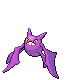
Lv.50, Relaxed :S, 30/
31/
31/
31/4/
31
Empoleon **
Lv.70, Docile,
31/
31/30/
31/6/
31
HP 70 Ghost
Tangela
Egg Moves: Leech Seed, Sleep Powder
Lv.1, Mild, 15/15/0/15/25/15
Haunter
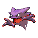
Lv.45, Hasty, 20/25/15/15/15/24
Ampharos
Lv.40, Naughty, 30/23/30/1/26/28
Vulpix
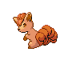
Lv.27, Jolly 29/19/25/16/12/16 Comes with Fire Stone attached.
Shedinja
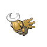
Lv.20, Lonely, 15/27/22/27/7/27
Budew
Lv.11, Brave, 24/8/16/23/9/22
HP Electric 65
Poliwrath
Lv.43, Quiet, Untouched (Other than Water Stone), 30/1/18/10/21/24
Demonz ???? ???? ????
Togekiss
Lv.34, Lax, 14/25/26/29/1/21
Possible trade with Chase
Froslass
Lv.34, Docile, 26/30/3/18/11/17
#345169 2 2007-07-19T21:00:33Z DemonzLunchBreak I'll trade for the Kadabra once I get my DS charger back (

), which should be in a few days at most. I'd let you know what I'm offering, except that my DS is all out of batteries, so I can't see my pokes. Is there anything in particular that you're looking for?
#345172 3 2007-07-19T21:04:04Z Chase Anything as long as it's good. If you have a Magmar with a Magmarizer, i'd love that!
#345398 4 2007-07-20T10:24:57Z Chase Eevee egg in the making, who wants it?
#345481 5 2007-07-20T14:42:53Z Zres I'll find a way to get it. No, wait a minute. I'll never be able to connect to the UK right now other than the internet.
But for now:
Nick, 0473 4559 0343
I'll post more info later.
#345515 6 2007-07-20T16:04:09Z Chase Ok, Kadabra got traded away already, someone from another forum was quicker and with what was an amazing offer

#345519 7 2007-07-20T16:09:11Z Hafling I'll take the egg... how'd you get it?
My code is 0473 4962 9581
#345521 8 2007-07-20T16:13:59Z Chase I just put my Vaporeon and my Ditto in Daycare...
I have Vaporeon, Jolteon, Flareon, Leafeon and Glaceon.
#345522 9 2007-07-20T16:16:57Z Hafling Oh, where do you get ditto's in Diamond? Because I have Pokemon Ranger...
#345637 10 2007-07-21T00:31:07Z Zres To get a Ditto in D/P, you have to:
Spoiler: Don't read if you hate letting other people do things for you
See every pokemon in Sinnoh, obtain the National Dex, get the Poke Radar, then go to Route 218 and use it.
I have a Froslass in training. Will be put up on offer soon!
EDIT: I'm also trying to get an Altaria, if anyone wants that in advance.
#345806 11 2007-07-21T13:16:59Z Hafling To get a Ditto in D/P, you have to:
Spoiler: Don't read if you hate letting other people do things for you
See every pokemon in Sinnoh, obtain the National Dex, get the Poke Radar, then go to Route 218 and use it.
I have a Froslass in training. Will be put up on offer soon!
EDIT: I'm also trying to get an Altaria, if anyone wants that in advance.
I have an altaria if you want it.
Edit: I also cant seem to find the ditto where you said to look...
#345849 12 2007-07-21T16:38:05Z Hafling Also, I have a weepinbell, do I need a leafstone? Or do I trade it to evolve it?
#346012 13 2007-07-22T00:55:23Z Zres You Leaf it.
And with the Ditto, you have to keep on trying. If the Poke Radar doesn't give you the Pokemon you want, kill the Pokemon. Then the Poke Radar will make another attempt. Keep on trying. One time, it took me three days to Poke Radar a Hoppip.
#346151 14 2007-07-22T12:36:57Z Hafling But, whenever I use the the radar in the grass, then try again, it just says Rowans words echoed blah blah blah... ;_;
Edit: Ok, Ive fixed that problem... but whenever I go to one of the sparkly places in the grass, its a Sinnoh pokemon, not a Ditto... ;_;
#346304 15 2007-07-22T22:33:14Z Hafling Does anyone have a water stone? I want a vaporeon... ;_;
#346313 16 2007-07-22T23:06:51Z Zres I have a Water Stone. It's okay if I make some random Bidoof hold it, right?
You don't have to go to the sparkly grass tile. In fact, the closest grass tile to you gives you a better chance of a different Pokemon.
Edit: On your first problem, you can't be on your bike to be able to use the Poke Radar.
Editedit: On second thought, I might as well catch an Eevee for you.

#346316 17 2007-07-22T23:16:33Z Ad Just a question: how early do you unlock PalPark? I have plenty of Pokemon up for trading that'd be hard/impossible to get without previous games, which I would willingly trade come 2 days time.
#346329 18 2007-07-22T23:29:21Z Zres You unlock Pal Park by seeing every Pokemon in Sinnoh. You talk to Rowan, and follow along there.
#346424 19 2007-07-23T03:57:44Z Hafling Zres, I have lots and lots of Evees, Im trying for each evolution, and, seeing as its night here, I cant get Espeon, but the only other one Im missing is Vaporeon, Ill trade you a thunder stone for the water stone, and yes, the Bidoof is fine.
#346430 20 2007-07-23T04:07:05Z Zres Ok, then can we get to the union room, then?
#346444 21 2007-07-23T04:33:14Z Hafling Sure, but, I was just wondering, do you have a male ralts or kirlia?

#346460 22 2007-07-23T06:11:16Z Zres Sorry, I already have a Gallade. I don't know what the big deal is. He's just like any other Pogeyman.
#346490 23 2007-07-23T08:41:54Z Chase Gallade is a great Physical sweeper if you can set him up with a BPing Ninjask say...
Espy and Umbrey can be got by making an Eevee uber happy then levelling it up. At night (8pm-3:59am) It'll go Umbreon and at Day (4am-7:59pm) It'll go Espeon.
#346596 24 2007-07-23T16:16:14Z Chase Me and AF probably had the best battle ever the other day.
AF's team
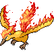
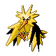
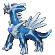
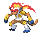
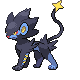
My Team

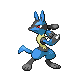
I was down to Dragonite, Meganium and Feraligatr, while he was left with Dialga. Percentages are health remaining after attack)
Score 3-1, Chase-AF
Dialga used Dragon Pulse!
It's Super Effective!
Dragonite Fainted!
Score 2-1
Oh dear, bad news for me, should I sacrifice Meganium or use Feraligatr first?
Chase sent out Meganium!
Ok, what to do? Probably suicide...
Dialga used Dragon Pulse! (10%)
Meganium used Petal Dance! (85%)
It's not very effective!
Mmkay...
The sandstorm rages!
Meganium is hurt by sandstorm (5%)
Ah well...he's dead.
Dialga used Flash Cannon!
Meganium fainted!
Score, 1-1
Right...
Go! Feraligatr!
As Dialga is part steel, I was screwed over by the sandstorm...
Dialga used Roar of Time! (15%)
Feraligatr used Earthquake! (40%)
It's super effective!
Now I lose to the sandstorm?
The sandstorm rages!
Feraligatr is hurt by sandstorm (5%)
Wow...
Dialga must recharge!
Feraligatr used Earthquake (0%)
It's super effective!
Dialga fainted!
Final Score, 1-0
That was amazing stuff, I will post another full warstory sometime...
#346616 25 2007-07-23T17:14:17Z DemonzLunchBreak I've got a couple pokes that I'd be willing to trade (someone just needs to walk me through that process...).
I've got a Froslass, level 34, Docile nature, 100/69/53/65/56/85 - that's probably my rarest pokemon right now. Just out of curiousity, what would you guys give for a togekiss?
Edit:
I just made a Togekiss (thanks, AF!). Level 34, Lax nature, 106/47/85/96/74/66
Any offers? I should be able to connect my DS to my wi-fi sometime in the next few days.
#346660 26 2007-07-23T19:53:47Z Chase I've got a couple pokes that I'd be willing to trade (someone just needs to walk me through that process...).
I've got a Froslass, level 34, Docile nature, 100/69/53/65/56/85 - that's probably my rarest pokemon right now. Just out of curiousity, what would you guys give for a togekiss?
Edit:
I just made a Togekiss (thanks, AF!). Level 34, Lax nature, 106/47/85/96/74/66
Any offers? I should be able to connect my DS to my wi-fi sometime in the next few days.
Ok, You've posted the stats, not the IV's, IV's can only go up to 31. Use the IV calculator to work them out.
I'll have that Togekiss for either of the above 2 pokes.
#346903 27 2007-07-24T12:23:25Z Hafling Whats an IV?
#346906 28 2007-07-24T12:31:45Z Chase Check the links I posted further up, the closer to 31, the better the Stat
#346913 29 2007-07-24T13:44:36Z Zres I am so wanting to fight you Chase. When do you think we could do this?
#346920 30 2007-07-24T14:46:04Z Hafling Im actually wanting to fight anyone, in about 30 minutes, Im training up my Evee evolutions... <.<
#346931 31 2007-07-24T16:06:16Z DemonzLunchBreak Ok, You've posted the stats, not the IV's, IV's can only go up to 31. Use the IV calculator to work them out.
I'll have that Togekiss for either of the above 2 pokes.

Oops.
Here are togekiss's average IV stats:
14/25/26/29/1/21
I'll trade you as soon as I can, but I can't connect the DS to my house's wi-fi, my dad lost the WEP key. He says he'll be able to figure it out sometime in the next few days, though.
#347251 32 2007-07-25T14:18:58Z Zres Warstory: AF and Zres
He pwned me. No need for any other information. I have to work on my strategy....
#347257 33 2007-07-25T14:46:03Z Hafling Ehehe, I had Monferno, Sceptile, Zapdos, Dialga, Walrein, and Alakazam. The only reason I won is because he didnt have any starters or legendaries...
#347268 34 2007-07-25T15:26:00Z Chase Cheap warstory I know, but it's Me and Zres.
Chase's team
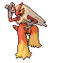
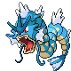
Zres' Team
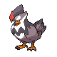
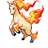
Zres sent out Staraptor
Chase sent out Gengar
Ok
Turn #1
Gengar used Thunderbolt!
It's super effective! (PWND% damage!)
Staraptor fainted!
Woo! OHKO Gengar!
6-5 to Chase
Zres sent out Chimecho!
Hmm?
Turn #2
Gengar used Thunderbolt! (40% damage)
Chimecho used Shadow Ball! (65% damage)
It's super effective!
Stupid Choice Specs...
Turn #3
Gengar used Thunderbolt (50% damage)
Chimecho used Shadow Ball! (65% damage)
It's super effective!
Gengar fainted!
Chase sent out Luxray!
5-5
Bweh
Intimidate lowers Chimecho's attack!
Turn #4
Luxray used Crunch first thanks to Quick Claw!
It's super effective! (Pwnd%)
Chimecho fainted!
Woo, Crunch Luxray rocks!
5-4
Zres sent out Rapidash!
Turn #5
Chase switched Luxrary for Gyarados!
Rapidash used Fire Blast!
It's not very effective! (30% damage)
Woo for Ddance!
Turn #6
Zres swapped Rapidash for Ampharos!
Gyarados used Dragon Dance
Gyarados' Attack and Speed Rose!
Ok, I should outspeed. But will I kill? Doubt it. I chicken out.
Turn #7
Chase switched Gyarados for Tangrowth!
Ampharos used Discharge!
It's not very effective (30% damage)
Ok, expect a switch...
Turn #8
Ampharos used Rock Climb! (20% damage)
Tangrowth used Sleep Powder!
It missed!
>_>, so much for predictions...
Turn #9
Ampharos used Rock Climb! (20% damage)
Tangrowth used Leech Seed!
Ampharos was seeded!
Ampharos lost health due to seed! (15%)
Ok, I'mma sleeping him now!
Turn #10
Ampharos used Discharge!
It's not very effective! (20% damage)
Tangrowth used Sleep Powder!
Ampharos fell asleep!
Ampharos lost health due to seed! (15%)
Woo, now remove the item.
Turn #11
Zres swapped Ampharos for Walrein!
Tangrowth used Knock off! (5%)
No item, switch time!
Turn #12
Chase swapped Tangrowth for Lucario!
Walrein used Ice Beam!
It's not very effective! (20%)
Hrr...still a big chunk...
Turn #13
Zres swapped Walrein for Rapidash!
Lucario used Aura Sphere! (99%)
Critical hit!
Lucario healed with Shell Bell (+10%)
Woo, Speedy!
Turn #14
Lucario used Extremespeed! (Pwnd%)
Rapidash fainted!
Lucario healed with Shell Bell (+1%)
Ok, good for me! Now what next?
5-3
Zres sent out Walrein!
Ugh, still don't know his last poke...
Turn #15
Lucario used Aura Sphere!
It's super effective! (95% damage)
Walrein used Surf! (60% damage)
Lucario healed with Shell Bell (+10)
Wow. Powerful. But within range of an Extremespeed
Turn #16
Zres swapped Walrein for Roserade!
Lucario used Extremespeed! (40%)
Lucario healed with Shell Bell (+5%)
Well...I know his party now. Time to Dragon Pulse!
Turn #17
Roserade used Grass Knot (30% damage)
It's not very effective!
Lucario used Dragon Pulse! (30%)
Lucario healed with Shell Bell (+5%)
Have to ES!
Turn #18
Lucario used ExtremeSpeed! (30%)
Roserade fainted!
Lucario healed with Shell Bell (+5%)
Lucky me, ES hax ftw!
5-2
Zres sent out Ampharos!
Turn #19
Lucario used ExtremeSpeed! (20%)
Ampharos is sleeping!
Lucario healed using Shell Bell! (+5%)
Heh, GG!
Turn #20
Lucario used Aura Sphere! (49%)
Ampharos is sleeping!
Lucario healed with Shell Bell (+5%)
Wow, 1hp...
Turn #21
Lucario used Dark Pulse! (1%)
Ampharos fainted!
Lucario healed with Shell Bell (+5%)
Zres sent out Walrein!
5-1
Game over, GG!
Turn #22
Lucario used ExtremeSpeed! (5%)
Walrein fainted!
Score: 5-0 Chase-Zres
Props
Lucario for sweeping
Tangrowth for sleeping Ampharos
Slops
Zres using too many UU pokes
Blaziken for being lazy and not entering the battle
Good game peeps!
#347278 35 2007-07-25T16:11:21Z DemonzLunchBreak Okay, boys, I really need Regirock, Regice, and Registeel. I'm willing to put up some valuable pokes for these, and I could also have them hold a few choice items (I've got stones!).
Here are a few of the pokemon:
Gengar, level 74 (about to level up). Hardy nature. Average IVs: 31/31/31/26/31/31
Rotom, level 15, Lonely nature, Average IVs: 10/23/2/20/28/8
Abomasnow, level 40, Quirky nature, IV: 3/2/21/19/6/30 - This guy knows blizzard.
Camerupt, level 57, Serious nature, IV: 10/6/15/15/10/31
Other than that, I've got a riolu straight from the egg, and I still have the togekiss and froslass.
I should be able to get my wi-fi working sometime today or tomorrow.
#347579 36 2007-07-26T11:19:44Z Ad I finally got the game! Woop!
So yes, you want the Regis for Regigigas?
I've only just started, but once PalPark's up and running, I can clone you my Regis.
I just need someone to tell me how to
.
Registeel even comes in a Luxury Ball

(I have an obsession with catching as many legdendaries as possible in them. I've got a LuxBalled Quaza too.)
#347616 37 2007-07-26T14:04:47Z Hafling You cant clone legendaries. =/
#347708 38 2007-07-26T19:53:24Z Chase Yes you can. I did.
Cloning in Pearl/Diamond is very difficult and risky, I can consult an expert cloner on Smogon Forums for you guys.
Ooh yeah, I have Darkrai[/bragging]
#347808 39 2007-07-27T01:31:37Z Hafling Oh... I thought he meant cloning via breeding... Well, if thats not what he meant, then I assume its cheating. <.<
Also, getting Darkrai isnt that hard, Im in the process of getting one.

#348339 40 2007-07-28T17:33:40Z Chase By trading what? The door glitch only works in early Japanese versions. Or you can go to a special event.
#350088 41 2007-08-02T04:29:40Z Hafling I'm getting darkrai because I have the required item, and i have a duskull... I just need to motivate myself to evolve it. <.<
#352433 42 2007-08-07T18:06:31Z Chase ==WARSTORY: Chase vs. Demonz==
[/align]
Chase's team
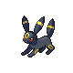
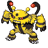
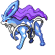
 Demonz's team
Demonz's team
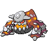
BEGIN
Chase sent out Jirachi!
Demonz sent out Lapras
6-6
Jirachi used U-turn!
Jirachi returned to Chase!
Chase sent out Electivire!
Lapras used Ice Beam! (60%)
Wow. Loads of damage.
Demonz swapped Lapras for Tyranitar.
A sandstorm brewed.
Electivire used Thunderpunch! (40%)
Electivire took damage from the Storm (10%)
Decent.
Electivire used Cross Chop! (60%)
Tyranitar fainted!
Electivire took damage from the Storm (10%)
6-5 Chase
Demonz sent out Heatran!
Electivire used Earthquake! (OHKO%)
Heatran fainted!
Electivire took damage from the Storm (10%)
6-4 Chase
OMG wow.
Demonz sent out Gengar
Electivire used Thunderpunch! (75%)
Gengar used Psychic (Dead)
Electivire fainted!
5-4 Chase
Chase sent out Umbreon!
Demonz switched gengar for Hariyama
Umbreon used Payback (LOL% damage)
Umbreon took damage from the Storm (10%)
Hariyama took damage from the Storm (10%)
Fun?
Umbreon used Protect!
Hariyama used Close Combat!
But it failed...
Umbreon took damage from the Storm (10%)
Hariyama took damage from the Storm (10%)
Scouting!
Chase switched Umbreon for Togekiss*
Hariyama used Close Combat! (70%)
Hariyama's Defense and SpDef fell
Togekiss* took damage from the Storm (10%)
Hariyama took damage from the Storm (10%)
A lot more damage than expected.
Demonz withdrew Hariyama for Lapras
Togekiss* used Air Slash! (60%)
Life Orb hurts Togekiss* (10%)
Togekiss* took damage from the Storm (10%)
Lapras took damage from the Storm (10%)
Ouch, and Sandstorm means I need to KO it.
Togekiss* used Aura Sphere! (40%)
Lapras fainted!
Life Orb hurts! (10%)
Togekiss* took damage from the Storm (10%)
Togekiss* fainted!
4-3 Chase
Togekiss did what was needed!
Chase sent out Suicune!
Demonz sent out Zapdos!
Ooh boy, switch!
Chase sent out Blaziken!
Zapdos used Thunderbolt! (90%)
Blaziken took damage from the Storm (10%)
Zapdos took damage from the Storm (10%)
NOO
Zapdos used Thunderbolt!
Blaziken fainted!
Zapdos took damage from the Storm (10%)
3-3 Even
Not good at all.
Chase sent out Umbreon!
Time for PAYBACK!
Demonz withdrew Zapdos for Hariyama
Umbreon used Payback! (About 20%)
Umbreon took damage from the Storm (10%)
Hariyama took damage from the Storm (10%)
Chase switched Umbreon for Suicune
Hariyama used Close Combat! (70%)
Suicune took damage from the Storm (10%)
Hariyama took damage from the Storm (10%)
Demonz switched Hariyama for Zapdos.
Suicune used Surf! (40%)
Suicune took damage from the Storm (10%)
Zapdos took damage from the Storm (10%)
Phew, nearly downed Zappy
Zapdos used Tbolt (DEAD)
Suicune fainted!
Zapdos took damage from the Storm (10%)
Zapdos fainted!
2-2 Even
Chase sent in Jirachi
Demonz sent in Hariyama
Jirachi used Zen Headbutt!
It missed...
Hariyama used Payback! (15%)
Hariyama took damage from the Storm (10%)
Damn him. If he used Close Combat, I would have been near dead, so I'm lucky. Jirachi resists sandstorms.
Demonz switched Hariyama for Gengar!
Jirachi used Zen headbutt (DEAD)
Gengar fainted!
2-1 Chase
Demonz bought out Hariyama
Hariyama used Endure!
Jirachi used Zen Headbutt!
Hariyama endured the hit!
Hariyama took damage from the Storm (10%)
Hariyama fainted.
2-0 Chase
EDN
Props
His Zapdos
My Jirachi lucky sweep
Slops
Suicune
Blaziken
#362775 43 2007-09-06T21:56:46Z Zres 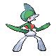
Friend Code: 0473 4559 0343
Lv. 30, Lax 25|25|8|18|15|
31
It's IVs are nice for physical sweeping. It's real stats have a great big advantage for it's level. At least most of them.
88|87|50|49|70|66
Accepting these Pokemon:
Eevee (female, if you're feeling generous)
Growlithe (also, female if you will)
Magby (with Magmarizer please?)
I mostly want Growlithe, then Eevee. Magby isn't my biggest priority right now but it's nice to have if I don't get a Growlithe.
It doesn't feel like a fair trade, but please, I want these guys, as I have no FireRed or LeafGreen.
#362788 44 2007-09-06T23:03:55Z Question¿Mark
Friend Code: 0473 4559 0343
Lv. 30, Lax 25|25|8|18|15|31
It's IVs are nice for physical sweeping. It's real stats have a great big advantage for it's level. At least most of them.
88|87|50|49|70|66
Accepting these Pokemon:
Eevee (female, if you're feeling generous)
Growlithe (also, female if you will)
Magby (with Magmarizer please?)
I mostly want Growlithe, then Eevee. Magby isn't my biggest priority right now but it's nice to have if I don't get a Growlithe.
It doesn't feel like a fair trade, but please, I want these guys, as I have no FireRed or LeafGreen.
Zres, Poke Mansion. I've bred 52 Evee from the two I caught there. (I only have 6 or 7 eggs left,

I gave alot to my friends)
Oh and I have 5 Ralts, and 5 Ralts Eggs. Every evolution stone (That I know of), and a fair number of TM's if anyone's interested.
My friend code is 4725 5092 1749, poke's I'm looking for are:
Milotic
Feraligator
Lugia
Meganium
Tyranitar
Lapras
Gardevoir
Kyogre
I don't know what to offer for them, I'll leave that up to anyone willing to trade one of them.
#362800 45 2007-09-06T23:48:24Z Zres I have an untouched Lapras. Gimme Growlz please.
Edit: QuestionMark, your friend code you gave is wrong. Can you double check?
#362964 46 2007-09-07T19:38:18Z Zres Sorry for the double post, but QMark's post didn't help me much, as I go to the Poke Mansion very frequently. I still need a Growlithe. Please, anybody?
QMark, I have a female Feebas; I can breed it and give you the hatched one, if you'd like.
#362980 47 2007-09-07T20:09:14Z Chase You need to talk to the owner, when he mentions an Eevee, it's the time to catch one within the next 2 days!
Mm. That Gallade looks good for Double Statusing.
#363069 48 2007-09-08T02:26:33Z Question¿Mark Zres, I'm 100% sure thats my friend code, 4725 5092 1749, I'd love a feebas Zres, so that'd be great
I was fighting a friend, and a Vileplume I caught as a gloom, evolved, and then left untouched and untrained, survived 2 earthquakes, and several leaf blades from a Sceptile.
#363347 49 2007-09-08T20:40:21Z Zres Nope, QuestionMark. It says that the friend code is wrong. I can't give you my Feebas. Darn, I wanted a Growlithe. Oh, well.
Off-topic: I'm getting a Wii soon, and the first thing I'll buy is PBR. Any players yet? *stares at Chase*
#363350 50 2007-09-08T20:49:30Z Chase It's not even out here yet...around Christmas?
#364641 51 2007-09-13T11:46:52Z theinvader I'drather like that Vulpix if it's still going. What do you want for it?
#376734 52 2007-11-03T23:45:06Z T3chno Okay, sorry for the bump..but....
My current party:
Milotic - lvl 69
Steelix - lvl 46
Emporeon - lvl 67
Torterra - lvl 41
Alakazam - lvl 48
Infernape - lvl 42 (Japanese)
I'll trade someone the Infernape for a Gengar (level 45+)
I don't have any GBA versions of Pokmon.

But whatever..
My friend code: 0215 8883 6105 Name: Dhaman
#376743 53 2007-11-04T00:17:54Z DemonzLunchBreak I could probably trade you a Ghastly that I've bred, if that's good enough. If that's not, I can make it a level 45 Gengar by Wednesday-ish.
Out of curiosity, what are the IVs/moveset on Infernape?
P.S. Your team has an Electivire weakness.
Milotic: Electivire used Thunder Punch!
Steelix: Electivire used Earthquake!
Empoleon: Thunder Punch!
Torterra: Electivire used Ice Punch!
Alakazam: Electivire used anything but Cross Chop!
Infernape: Electivire used Earthquake!
#376763 54 2007-11-04T01:24:04Z T3chno I could probably trade you a Ghastly that I've bred, if that's good enough. If that's not, I can make it a level 45 Gengar by Wednesday-ish.
Out of curiosity, what are the IVs/moveset on Infernape?
P.S. Your team has an Electivire weakness.
Milotic: Electivire used Thunder Punch!
Steelix: Electivire used Earthquake!
Empoleon: Thunder Punch!
Torterra: Electivire used Ice Punch!
Alakazam: Electivire used anything but Cross Chop!
Infernape: Electivire used Earthquake!
I'd prefer the Gengar....
My Infernape Level 42, rash nature:
Moves:
Flame Wheel
Rock Smash
Close Combat
Mach Punch
120 Hp, 107 Atk, 73 Def, 119 Sp.A, 60 Sp.D, 111 Spd
I just stared playing, so I don't know if that's good or not.
I got this one over the GTS for my Mime Jr.
#376771 55 2007-11-04T01:56:21Z Gothic_Princess11 i like pie

#376779 56 2007-11-04T02:25:25Z DemonzLunchBreak Hmm, yeah, well, I'm not really interested in Infernape then.
However, I'll still give you a Gengar (I have plenty of these guys) with Will-O-Wisp as an egg move.
#378517 57 2007-11-11T12:09:24Z spoon i like pie
?
Anyway, I'll be gettin my DS in (hopefully) a couple days, so do any of you guys have any tips for n00bs?
I've played R, B, C, FR, S, R, and E versions.
(Red, Blue, Crystal, FireRed, Sapphire, Ruby, Emerald)
#378537 58 2007-11-11T16:37:17Z DemonzLunchBreak @ Spoon: Empoleon is the most useful in-game, but Infernape is more useful for battling people after you've beaten the game, so pick one of those. Don't pick Torterrible.
Don't make the mistake I did. Never put HMs on pokemon that you're gonna want at the end of the game (with the exception of surf).
@ T3chno: Gengar's comin', it'll just be a few more days. Some stuff has come up.
Oh, and, also, if you guys want a wifi battle, PM me here and we'll figure something out.
#378752 59 2007-11-12T10:18:36Z Condog Damn i want a DS soooooo bad. All the traditional style pokemon games i've played have been emulators on the PC. I am jealous.

EDIT: btw does anyone play
Pokemon Crater? Its the poor persons substitute for real pokemon!
#378867 60 2007-11-12T21:21:52Z T3chno My current Party:
73 Emporeon [Flight]
71 Milotic
46 Steelix [Quailman]
56 Skarmory
55 Rhydon [Beastie]
58 Weezing [Sweeze]
[Nickname]
Training time! I heard the rhydon evolves in diamond. Yay!
#378889 61 2007-11-12T23:16:00Z spoon @ Spoon: Empoleon is the most useful in-game, but Infernape is more useful for battling people after you've beaten the game, so pick one of those. Don't pick Torterrible.
Don't make the mistake I did. Never put HMs on pokemon that you're gonna want at the end of the game (with the exception of surf).
Why not? I thought HM's were permanent. And wtf is a Torterrible?
Quote: Wikipedia
After the production of Pokemon Diamond/Pearl, it is revealed that the male Rhydon has a longer drill horn than the female.
I wonder why?
#378931 62 2007-11-13T02:22:04Z Condog I heard the rhydon evolves in diamond. Yay!
Rhyperior. I'm a little sketchy on the details, but i think it involves holding an item then trading it.
#380576 63 2007-11-18T16:28:07Z DemonzLunchBreak Rhyperior. I'm a little sketchy on the details, but i think it involves holding an item then trading it.

The item you want is called the "Protector." It can be found on route 228. Rhyperior's a top-tier physical tank, and he can be a beast if his ability is solid rock.
Why not? I thought HM's were permanent. And wtf is a Torterrible?
HMs
are permanent. That's the problem. You'll never be able to replace the move, and all the HMs besides surf completely suck. Surf is actually a good move - but it's the only HM worth using on a pokemon that you plan on battling with competitively.
Torterrible is my nickname for Torterra, which is the evolved form of Turtwig. Torterra sucks. Don't pick Turtwig.
T3chno, I will make your Gengar today.
Also, I'd really like to battle anyone here who has WiFi access.
#380590 64 2007-11-18T17:25:13Z Ad HMs? Permanent?
Go to Canalave.
Also, if you're stuck for starters, choose Chimchar. If you want a Piplup, I'll trade you for one. I've got about twenty.
#380618 65 2007-11-18T19:18:50Z spoon Thanks for all your help guys. Unfortunately, my mom keeps stalling and finds excuses for me not to buy it.
#380619 66 2007-11-18T19:20:27Z T3chno Mah Party:
75 Crobat
73 Milotic
73 Raichu
74 Emporeon
46 Steelix
50 Venomoth
Still looking for pokemon to replace Steelix and Venomoth....fire pokemon perhaps?
Ready for a battle soon...
Dhaman: 0215 8883 6105
#380636 67 2007-11-18T21:10:03Z Chase Good luck finding a fire type without importing. Heatran is a good idea.
#380682 68 2007-11-19T00:49:00Z T3chno Still have a masterball....is it worth using on Heatran?
#380699 69 2007-11-19T01:25:18Z DemonzLunchBreak Still have a masterball....is it worth using on Heatran?
Err... only if you've already caught Cresselia. Cresselia's much harder to catch the regular way, and more useful in battles, in my opinion. Heatran *can* be a team-wrecker, though, when correctly applied - but he's not too hard to catch with a dusk ball.
#380702 70 2007-11-19T01:37:46Z Condog Still have a masterball....is it worth using on Heatran?
Err... only if you've already caught Cresselia. Cresselia's much harder to catch the regular way, and more useful in battles, in my opinion. Heatran *can* be a team-wrecker, though, when correctly applied - but he's not too hard to catch with a dusk ball.
heatran has a x4 weakness to ground right? anything with a x4 weakness is severly disadvantaged, unless they have an ability which nullifies it. (solid rock, levitate etc.)
#380704 71 2007-11-19T01:42:54Z DemonzLunchBreak Yeah, Heatran has an Earthquake weakness. However, that doesn't matter as much for an offensive poke, like heatran. Weavile has a 4x fight weakness, but he's a beastly sweeper, and Heracross has a 4x flying weakness, but he's one of the biggest offensive threats in the game. Usually heatran's ground weakness is solved by either soft-resetting for one that has hidden power ice, or slapping a choice scarf on him.
Also, Heatran has some really good resistances, and can switch into fire attacks for free.
#380774 72 2007-11-19T05:10:11Z T3chno Okay current party:
Emporeon - 74
Milotic - 74
Raichu - 74
Crobat - 76
Giratina - 71
Heatran - 70
Giratina
#380781 73 2007-11-19T05:41:18Z DemonzLunchBreak I'm working on your 'Gar. Is it okay if it has hypnosis instead of Will-O-Wisp?
Also, if you want it to have a nickname, tell me now.
#381001 74 2007-11-19T23:34:17Z T3chno I'm working on your 'Gar. Is it okay if it has hypnosis instead of Will-O-Wisp?
Also, if you want it to have a nickname, tell me now.
If you can get it to level 70, I can give you my Milotic.
#384072 75 2007-11-28T16:04:23Z Ad Phew! Finally caught my Cresselia.
...In a Pokball.
*Puts next to Luxballed Rayquaza*
I've clocked up 250 hours, and caught 400+ Pokmon. One I complete my dex, I might get round to raising some decent Mons and battling you guys.
#390011 76 2007-12-16T19:54:39Z Pheidippides Sorry for the bump, but I think I'll be getting WiFi working sometime in the near future, and then I'd love to battle and trade with you guys. I also posted because I need a little team-building help. I refuse to use any legendaries, pseudo-legendaries, other one-of-a-kinds, or Dragonite/Tyranitar equivalents. Just my favorite run-of-the-mill Pokes. Here's what I'm working on...
Ninetales/Flareon (I haven't raised either yet, but I plan to raise both and use them interchangeably.)
Vileplume (Currently L. 28 Gloom)
Swellow (Not yet.)
Mismagius (Currently in the L. 60s, but with a Brave nature
)
(Water Type.. Starmie? Vaporeon? I don't have either yet.)
(Something Else.. Umbreon? My Umbreon is currently L. 28)
I know none of them are anything fantastic, but I'm hoping to work out something. I'm open to suggestions for Pokes and even a bit on movesets.
#390013 77 2007-12-16T19:56:10Z T3chno Sorry for the bump, but I think I'll be getting WiFi working sometime in the near future, and then I'd love to battle and trade with you guys. I also posted because I need a little team-building help. I refuse to use any legendaries, pseudo-legendaries, other one-of-a-kinds, or Dragonite/Tyranitar equivalents. Just my favorite run-of-the-mill Pokes. Here's what I'm working on...
Ninetales/Flareon (I haven't raised either yet, but I plan to raise both and use them interchangeably.)
Vileplume (Currently L. 28 Gloom)
Swellow (Not yet.)
Mismagius (Currently in the L. 60s, but with a Brave nature )
(Water Type.. Starmie? Vaporeon? I don't have either yet.)
(Something Else.. Umbreon? My Umbreon is currently L. 28)
I know none of them are anything fantastic, but I'm hoping to work out something. I'm open to suggestions for Pokes and even a bit on movesets.
I'm ready to battle [but my pokemon are only in the early 70s I think].
Nevertheless, I'll play you when I have time Pheidi.
#390343 78 2007-12-17T20:04:09Z Ad I refuse to use... Dragonite/Tyranitar equivalents. Just my favorite run-of-the-mill Pokes.
You'll love my main team then...

I'm currently finishing that team off, but I do also have a more normal team in the works.
...How full is everyone's dex? Mine's now at 475... just a few larger evo's left and I'm done!
I have one of each of these 475, with the absolute maximum number of Poks possible all having my Pearl ID.
Also, I'm a bit stuck as the how to get Groudon/Dialga/Latios, but I'll figure it out.
#393823 79 2007-12-27T16:59:37Z spoon Well, I got Diamond for chirstmas.
. Also, I have WiFi. The card in my sig is real, however, so i'm not ready to battle.
Here are the levels:
Prinplup: 34
Staravia: 27
Budew: 27
Luxray:30
Geodude: 25
Fat Whore (Happiny): 18 (but don't worry. It has Exp. Share.)
#393826 80 2007-12-27T17:23:59Z Pheidippides Well, I got Diamond for chirstmas. . Also, I have WiFi. The card in my sig is real, however, so i'm not ready to battle.
Here are the levels:
Prinplup: 34
Staravia: 27
Budew: 27
Luxray:30
Geodude: 25
Fat Whore (Happiny): 18 (but don't worry. It has Exp. Share.)
If I had WiFi, I'd definitely battle you. I've got plenty of guys in the high-20s to low-30s range. Now I wish I hadn't raised by Ninetales to L50 so quickly.
My Ninetales, aside from being my favorite Pokemon in general, is the single Pokemon I've put the most work into ever. Neutral nature, EV trained (252 Speed, 255 Sp. Atk., 3 Def. - I forgot to count a Gastly, sue me
), and bred for a really nice moveset. I'm not sure how his IVs or actual stats stack up, but he's definitely smarter than your average supernatural fox

.
#393848 81 2007-12-27T19:04:46Z T3chno
My Ninetales, aside from being my favorite Pokemon in general, is the single Pokemon I've put the most work into ever. Neutral nature, EV trained (252 Speed, 255 Sp. Atk., 3 Def. - I forgot to count a Gastly, sue me ), and bred for a really nice moveset. I'm not sure how his IVs or actual stats stack up, but he's definitely smarter than your average supernatural fox .
Heh, my favorite Pokemon would have to be Pidgey. Next in line is Rhydon.
My party (Wi-Fi battle anyone?):
Emporeon lvl 74
Crobat lvl 76
Milotic lvl 74
Raichu lvl 74
Heatran lvl 70
Giratina lvl 70
I plan on getting rid of Heatran and Giratina and replacing them with someone better.
#393986 82 2007-12-28T01:50:43Z Pheidippides Man, this stinks. Check out my Ninetales's IVs:
Quote: Serebii.net 4th Gen IV Calculator
25|26|30|16|2|11
All in all, it's not too bad because HP and Def. are good and Sp. Atk and Speed are
decent, but that Sp. Def. is just plain awful.

I'm still using it, though. It may not be perfect, but I'm sure it'll still do pretty well. I hope.
#394088 83 2007-12-28T09:54:42Z spoon He-hey! I've been training ALOT. I mean an ass load of training, Also, is there a guy who you go to for EV training?
My new pokes:
Empoleon: 38
Luxray:31 ( hasn't been used that much
)
Staravia:29 (him either

)
Budew:27
Fat Whore (Happiny):27
Graveler: 26
#394489 84 2007-12-29T18:06:08Z eternal_moonlight I trade the poliwrath for a lvl 50 aipom!
Adam 1633 1917 3578
#394491 85 2007-12-29T18:14:18Z eternal_moonlight Heres my party. I need the last gym badge. should I train more or do you think im ready?
Machoke: 40
Aipom: 50
Luxray:40
Haunter: 40
Staraptor: 40
Infernape: 40
#394506 86 2007-12-29T19:08:35Z T3chno My sister almost started a new game in Diamond... O_O
Anyone got an aerodactyl?
#394628 87 2007-12-30T02:04:44Z Pheidippides Also, is there a guy who you go to for EV training?
Nah. EV training is work you have to put into the training of a Pokemon before it ever sees any kind of battle. In case you don't know the basics, Pokemon earn Effort Values (EVs) when they defeat other Pokemon. Each individual Pokemon is worth a specific amount of a certain type (HP, Atk, Def, etc.) of EVs. Each 4 EVs a Pokemon earns for a stat coincides with a one-point increase for that stat.
Pokemon can earn a maximum of 510 EVs total, so you have to spread them over certain stats wisely. Sure, you could put 255 on Atk and Speed for a physical sweeper, but you'd get the same effect with 252 in each stat because EVs work in groups of 4. So you can spend those last 6 EVs on another stat to get an extra point somewhere, like HP or Defense.
Calcium, Carbos, and the other stat-boosting items add 10 EVs to the stat they boost. However, you can only use 10 of a certain kind of item on a Pokemon. Pokerus and Macho Brace double the EVs a Pokemon earns in each battle. The berries that increase tameness but decrease a stat decrease the stat by 10 EVs.
Now let's consider my Ninetales. It has Pokerus and Macho Brace, so it earns 4 times the amount of EVs it would normally receive. I gave it 10 Calciums for Special Attack, and 10 Carboses for Speed. This puts it at 100 Special Attack EVs and 100 Speed EVs. I then proceeded to beat 38 Magikarps with my Vulpix fresh out of its egg, so I maxed out my Speed EVs at 252. I then went and beat 39 Gastly's (I miscounted.), so it's Special Attack EVs went up to 255. I had 3 EVs to spare, so I beat a Geodude to get a few Defense EVs. However, they don't do anything, because I only could get 3 of the EVs or I would go over 510. After 510 EVs, any extra EVs don't count.
For the record, Magikarp is worth 1 Speed EV, Gastly is worth 1 Special Attack EV, and Geodude is worth 1 Defense EV. My Pokerus/Macho Brace combo quadrupled Ninetales' EV income, so its training was completed a lot quicker. I suggest using
http://pokemon.marriland.com/ to look up how many EVs each Pokemon is worth. That site is very useful for anything Pokemon, actually.
Note that EV training must be done fresh out of the egg/wild. Otherwise, you will earn EVs you may not want by battling before beginning EV training. I hope all of this helps.
#394751 88 2007-12-30T12:21:28Z Chase Heres my party. I need the last gym badge. should I train more or do you think im ready?
Machoke: 40
Aipom: 50
Luxray:40
Haunter: 40
Staraptor: 40
Infernape: 40
Oh, last gym badge, still needs more training, I recommend going to the guy who accepts heart scales in Pastoria, and teaching Aipom Double Hit, then level it up one. You then have Ambipom.
Also, you'll need someone with Earthquake to survive, or something with an Electricity resist. Best thing to do is level up Infernape so you have a strong Fighter for their own Ambipom, then use your Ambipom with Fake Out/U-Turn as a lead.
If you have the TM for U-Turn...
Team.
Articuno Lv.70
Charizard Lv.86
Electivire Lv.85
Togekiss Lv.87 *
Blissey Lv.80
Rayquaza Lv.86 (For flying)
#394789 89 2007-12-30T18:06:23Z eternal_moonlight Cool. Thanks Chase!
#394790 90 2007-12-30T18:10:56Z eternal_moonlight I forgot. How do you get a heart scale.
#394804 91 2007-12-30T19:46:35Z Pheidippides I forgot. How do you get a heart scale.
If you have Ruby/Sapphire/Emerald, Luvdiscs can be holding them. Otherwise, go into the Underground in D/P for a while. If you poke around long enough, you may dig up a few.
#394813 92 2007-12-30T21:06:05Z Chase Also, don't forget to use the [image lost: post-13-1171107734.png] button for things, as Double Posting is a bad thing around here.
#394819 93 2007-12-30T21:36:17Z T3chno My sister started a new game in Diamond.
.....might be a while till I get back up there...
#394828 94 2007-12-30T22:26:27Z eternal_moonlight Thanks for all the help guys!
#395836 95 2008-01-02T19:42:19Z Chase Bah, I feel for you T3chno. Did you migrate any? If you did that'd be real unlucky.
If anyone wants to battle soon, I should be able to within the next month...
#395853 96 2008-01-02T21:17:10Z spoon Heres my party. I need the last gym badge. should I train more or do you think im ready?
Machoke: 40
Aipom: 50
Luxray:40
Haunter: 40
Staraptor: 40
Infernape: 40
OH MY GOD. That's stronger than i was when I challenged him. And i won. You definitely need to train more for the Elite 4 though.
And T3CHNO, i really feel for you. I feel like crying for you. But i know a cloner who's got emerald.
She can't clone D/P pokes though. she says it's to risky or something.
And what level does Budew evolve at?
#396077 97 2008-01-03T04:20:08Z T3chno Starting a new game tomorrow. :-/
Chimchar or Piplup?
#396470 98 2008-01-04T02:00:00Z Pheidippides And what level does Budew evolve at?
Budew evolves through friendship. Try those berries that lower stats but up friendliness and also feeding it Poffins that it likes. Worked for my Chingling and Eevee.
#396472 99 2008-01-04T02:05:37Z Zres Budew evolves through friendship. Try those berries that lower stats but up friendliness and also feeding it Poffins that it likes. Worked for my Chingling and Eevee.
I wouldn't use those berries. The stat-raising food makes it more friendly. And if you can get to Veilstone, go to the massaging lady. She also finds fashion items as a bonus.
#396473 100 2008-01-04T02:07:14Z T3chno Okay. Starting soon [a new game]
What's the best party to start out with?
[in Diamond]
#396489 101 2008-01-04T02:50:17Z spoon i had caught only 4 and they were:
Shinx
Starly
Bidoof
Abra
and Piplup
#396635 102 2008-01-04T16:41:07Z Ad What's the best party to start out with?
Go for your basics:
Piplup
Starly
Shinx
Abra
Munchlax / Murkrow
Bidoof (for HMs)
When they evolve, they evolve well, and can easily see you through the Elite Four.
Only bother raising a decent team after.
#399449 103 2008-01-10T17:46:58Z Jhon- =) you get heart scales by digging under ground. with the explorer kit. you can et the explorer kit in eterna city.
i don't see the point in leveling up the pokemon you ev train if you are going to use them online because you can set up a match that puts all the levels up to level 100.
i don't have wifi so i train all my pkmn for the battle tower. there should be a topic on that.
but i am almost an expert on pokemon i have spent 501 hours on the game so far and i ev train all the time. and i would be willing to give ev spreads for almost any pokemon.
#399452 104 2008-01-10T18:05:17Z Chase You'd be surprised how much it makes a difference. A level 100 has its stats there. A level 50 bumped up has averaged out stats compared to its IVs, so if you had a poke with all 1's you'd be screwed.
I put a Lv.40 Meganium against a Lv.100 of the same, both were Lv.100 in Wifi battle, I lost. Go figure
#399686 105 2008-01-11T07:22:41Z DemonzLunchBreak i don't have wifi so i train all my pkmn for the battle tower. there should be a topic on that.
but i am almost an expert on pokemon i have spent 501 hours on the game so far and i ev train all the time. and i would be willing to give ev spreads for almost any pokemon.
Do you have a Shoddybattle team? If you do, we should fight sometime.
#399793 106 2008-01-11T17:54:16Z Pheidippides i don't have wifi so i train all my pkmn for the battle tower. there should be a topic on that.
but i am almost an expert on pokemon i have spent 501 hours on the game so far and i ev train all the time. and i would be willing to give ev spreads for almost any pokemon.
Do you have a Shoddybattle team? If you do, we should fight sometime.
Shoddybattle? What's that?

#399806 107 2008-01-11T19:12:13Z TigerHulkSmash You'd be surprised how much it makes a difference. A level 100 has its stats there. A level 50 bumped up has averaged out stats compared to its IVs, so if you had a poke with all 1's you'd be screwed.
I put a Lv.40 Meganium against a Lv.100 of the same, both were Lv.100 in Wifi battle, I lost. Go figure
IVS arn;t effected by level .
if you have a lvl 100 with 1 ivs in everything (untouched)
and a lvl 1 with 1 iv in everything.
When you take them into a lvl 100 wifibattle they will hae the same stats.
Go figure.
#400142 108 2008-01-12T18:43:53Z Chase I know IVs are not affected by level fool but level still affects stats, everyone knows that. You cannot expect a Lv.100 to have exactly the same stats as a Lv.1, as you said. Lv.1 goes to Lv.2, gains +2 in every stat, with some EV's to boot (Saying it didn't level with an RC), so the Lv.2 would have higher stats than the Lv.1 in a Lv.100 Wifi battle once the stats have been calculated.
Back to the main point of this post, I can actually play freely online again! This means if anyone wants a battle, trade, or anything else, just send me a PM.#400192 109 2008-01-12T20:37:55Z Heartattack you guys are pretty hardcore with your pokemon
i stopped playing after ruby and someone stole my gameboy
#400201 110 2008-01-12T20:46:01Z Chase you guys are pretty hardcore with your pokemon
i stopped playing after ruby and someone stole my gameboy
It's just that Pearl/Diamond have allowed for Wifi battling, making everything much more fun.
Anyone got PBR?
#400284 111 2008-01-13T00:20:42Z DemonzLunchBreak Shoddybattle? What's that?
http://shoddybattle.com/#400295 112 2008-01-13T00:52:41Z Pheidippides Anyone got PBR?
I'm planning on getting it really soon. And thanks, Demonz. That's like a better version of NetBattle, I would think? It looks cool.
#400315 113 2008-01-13T01:38:21Z DemonzLunchBreak Anyone got PBR?
I'm planning on getting it really soon. And thanks, Demonz. That's like a better version of NetBattle, I would think? It looks cool.
Basically, yeah. You should make a team. And we should battle.
#400323 114 2008-01-13T01:50:05Z Pheidippides Anyone got PBR?
I'm planning on getting it really soon. And thanks, Demonz. That's like a better version of NetBattle, I would think? It looks cool.
Basically, yeah. You should make a team. And we should battle.
Will do, after my exams are over. I look forward to it.
#403238 115 2008-01-22T23:50:18Z eternal_moonlight Im having trouble in some parts for the version pearl. Anyone know were I can find a good guide to use?
#404324 116 2008-01-26T12:09:01Z TigerHulkSmash
does anyone actually comeptetivly battle , or are all just in-game trainers :S
#404428 117 2008-01-26T19:48:25Z Chase
does anyone actually comeptetivly battle , or are all just in-game trainers :S
I partially do that, I'm new to the scene so I'll be getting a decent team up soon.
#404519 118 2008-01-26T23:31:20Z TigerHulkSmash Never be scared to take time off to make a team , took me a month
#449528 119 2008-06-29T12:24:05Z Communist I can trade/battle you all. Friend code is in my sig, pm me yours...